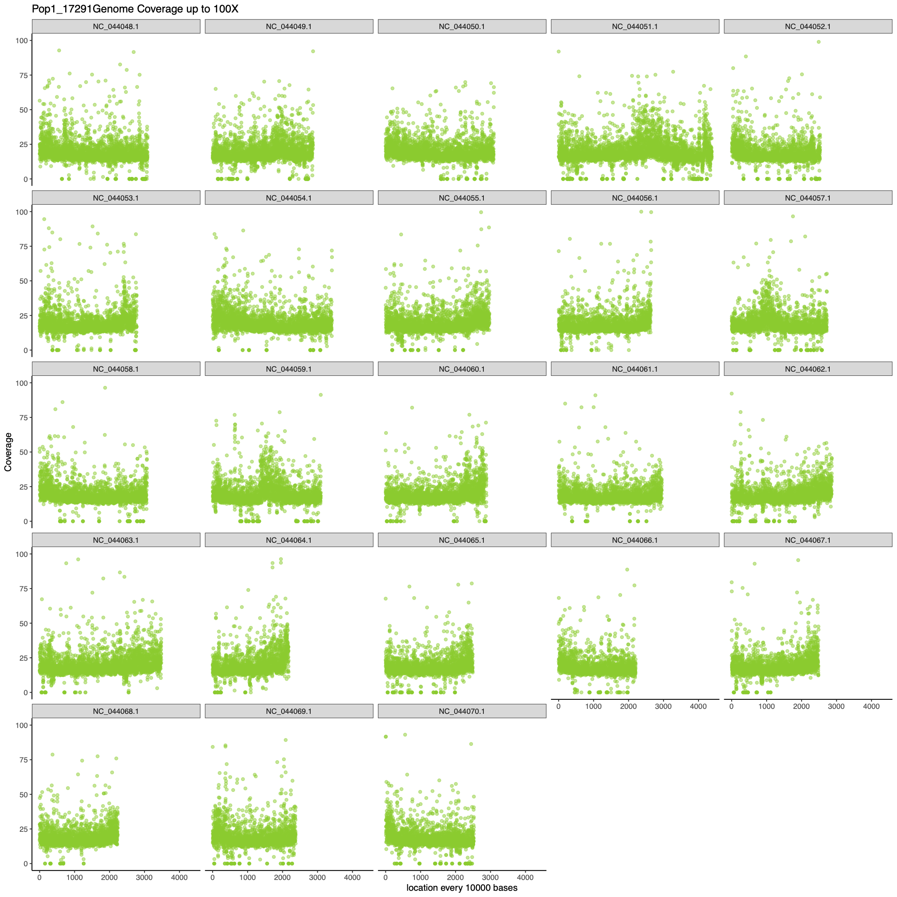

WGS fastq2vcf walkthrough
Initial publication year: 2022
How to cite
Stacks
If your samples need to be demultiplexed, running the program Stacks is a necessary first step. Stack’s process_radtags function searches sequence reads for barcodes that you provide and demultiplexes the reads using your barcode file. This file specifies which barcode belongs to which sample and will trim off those barcodes once it demultiplexes.
Example scenario
Samples used as examples throughout this walkthrough were multiplexed using 3 different unique sequences. Every sample had a unique combination of an i5 primer, i7 primer and adapter barcode. Data from the sequencing facility will demultiplex to the level of unique combinations of i5 and i7 primers. Therefore for these samples, there were 32 unique i5 and i7 primer combinations and so the sequencing facility sent 64 fastq.gz files: one for the forward sequence and one for the reverse for all 32 combinations. We will take one file as an example in the following code.
Helpful Links
process_radtags manual and specific walkthrough for process_radtags
Manual
Walkthrough
Example Fastq File from Sequencing Facility
Read 1
[schaal.s@login-00 workingGroupFiles]$ head i5-4-i7-11_R1_exampleData.fastq.gz
@GWNJ-1012:218:GW191226406th:1:1101:1181:1000 1:N:0:GGCTAC+GGCTCTGA
CGATGTTTGGAAAGACAAAAAATACATTTAGATCCAAATGACTTCTATAATGGATTTTGAAATTATATATACGAGATGCTTTAGTTCAAAACATTTGACACAAATGAGGTTCAACATAAAGAACATCGAGATCGGAAGAGCACACGTCTG
+
FFF:FF,FFFFFFFFFFFFFFFFFFFFFF:FFFFFFFFFFFFFFFF:FFFFFFFFFF:F,FFF:FFFFFFFFFFFFFFFFFFFFF:FFFFFFFFFFFFFFFFFFFFFFFFFFFFFFF,FFFFFFFFFFFFF:FFFF,F:FFFFFFF:FFF
@GWNJ-1012:218:GW191226406th:1:1101:1651:1000 1:N:0:GGCTAC+GGCTCTGA
CTTGCATTGAGATTTCTGAAAGAAGAGCTCCATCCAGTGGCAGAAAGGGGACGTTTCAAAAGCACGAATGCAAGCCTTTTAATTTTTCCAAAATAAAAATATGCAAGAGATCGGAAGAGCACACGTCTGAACTCCAGTCACGGCTACATC
+
FFFFFF,FFFFFFFFFFFFFFFFFFFFFFFFFFFFFFFFFFFFFFFFFFFFFFFFFFFFFFFFFFFFFFFFFFFFFFFFFFFFFFFFFFFFFFFFFFFFFFFFFFFFFFFFFFFFFFFFFFFFFFFFFFFFFFFFFFFFFFFFFFFFFFF
@GWNJ-1012:218:GW191226406th:1:1101:2193:1000 1:N:0:GGCTAC+GGCTCTGA
CGATGTTGCATGGAGTGGCTGGTGTCTGTGCCGACCACTCTGGTTCCAGAGGTAATGAAGACCAGCTTCCCCCCTGGCCACACAGTGGACTCAATCTTCCCTGAGATAAAGGTGAAGAGTTCCTCCTTGTTCTTAGGGTAACATCGAGATRead 2
[schaal.s@login-00 workingGroupFiles]$ head i5-4-i7-11_R2_exampleData.fastq.gz
@GWNJ-1012:218:GW191226406th:1:1101:1181:1000 2:N:0:GGCTAC+GGCTCTGA
CGATGTGCTTTATGTTGAACCTCATTTGTGTCAAATGTTTTGAACTAAAGCATCTCGTATATATAATTTCAAAATCCATTATAGAAGTCATTTGGATCTAAATGTATTTTTTGTCTTTCCAAACATCGAGATCGGAAGAGCGTCGGGTAG
+
FFFFFF,FF,FFFFFFFF:FFFFFFFFFFFFFFFFFFFFFFF:FFFFFFFFF:FFFF:F,F:FFF,:FFFFFFFFFF,,:,:FFFFFFFF,FFFFFFFFF:F:FFF:F,F,FFFFF:FFF:FFF,,F::FFFFF,,F:FFFFFFF,F,,F
@GWNJ-1012:218:GW191226406th:1:1101:1651:1000 2:N:0:GGCTAC+GGCTCTGA
CTTGCATATTTTTATTTTGGAAAAATTAAAAGGCTTGCATTCGTGCTTTTGAAACGTCCCCTTTCTGCCACTGGATGGAGCTCTTCTTTCAGAAATCTCAATGCAAGAGATCGGAAGAGCGTCGTGTAGGGAAAGAGTGTTCAGAGCCGT
+
FFFFFFFFFFFFFFFFFFFFFFFFFFFFFFFFFFFFFFFFFFFFFFFFFFFFFFFFFFFFFFFFFFFFFFFFFFFFFFFFFFFFFFFFFF:FFFFFFFFFFFFFFFFFFFFFFFF:FFFFFFFFFFFFFFFFF:FFFFFFFFFFFFFFF,
@GWNJ-1012:218:GW191226406th:1:1101:2193:1000 2:N:0:GGCTAC+GGCTCTGA
CGATGTTACCCTAAGAACAAGGAGGAACTCTTCACCTTTATCTCAGGGAAGATTGAGTCCACTGTGTGGCCAGGGGGGAAGCTGGTCTTCATTACCTCTGGAACCAGAGTGGTCGGCACAGACACCAGCCACTCCATGCAACATCGAGATStacks Walkthrough
Additional Flags
-p path to your genome files. If you have paired data (forward and reverse reads), put your two fastq files in the same folder and only have those two files in it. I created folders for each index combination to keep everything organized and easy to run stacks on.
-o path to where you want your output files to go. For subsequent steps, you’ll want all of these demultiplexed files in the same folder. Create a folder like “Stacks_Out” where you write all your files to.
-b path to your barcode file
--inline_inline The barcode option flag has 6 different options and you have to use the proper flag for your barcodes or indexes that need to be demultiplexed. Because the example samples have inline barcodes on either end of the sequence if using the practice data you need to use the –inline_inline flag.
-P If paired end sequencing was used, you need to add the -P flag to indicate this.
--disable_rad_check this flag is needed if you are doing anything other than RAD-seq. Stacks defaults to requiring cutsite sequences that are used in RAD-seq, but for WGS you won’t have cut sites and need to disable the rad check.
-r this flag allows Stacks to rescue any barcodes that are off by one bp. For example, the barcode ACTTGA might appear as CTTGA or TACTTGA. This should only be a small percentage of reads and will probably recover about 1% of reads.
Code for running Stacks
process_radtags -P -p {Path to genome files} -o {Path for output} -b {barcode file} --inline_inline --disable_rad_check -r
Example code for running on a Cluster
You can run the practice data files using the format below while changing the path on your computer to fit your needs.
#!/bin/bash
#SBATCH --job-name=stacks_i54_i711 # sets the job name
#SBATCH --mem=1Gb # reserves 1 GB memory
#SBATCH --mail-user=schaal.s@northeastern.edu # set your email to get notifications about your run
#SBATCH --mail-type=FAIL # if the job fails for any reason email the provided email
#SBATCH --time=24:00:00 # reserves machines/cores for 24 hours.
#SBATCH --output=stacksi54_i711.%j.out # sets the standard output to be stored in file, where %j is the job id
#SBATCH --error=stacksi54_i711.%j.err # sets the standard error to be stored in file
process_radtags -P -p ./genomeFilesi54_i711/ -o ./Stacks_Out/ -b barcodeFilei54_i711.txt --inline_inline --disable_rad_check -rThis will create four new fastq files for each sample provided in the barcodeFile. Because the practice data is a subset of the full dataset, this will only fill files with reads that are included in the subset file. The process_radtags program wants to keep the reads in phase, so that the first read in the sample_XXX.1.fq file is the mate of the first read in the sample_XXX.2.fq file. Likewise for the second pair of reads being the second record in each of the two files and so on. When one read in a pair is discarded due to low quality or a missing restriction enzyme cut site, the remaining read can’t simply be output to the sample_XXX.1.fq or sample_XXX.2.fq files as it would cause the remaining reads to fall out of phase. Instead, this read is considered a remainder read and is output into the sample_XXX.rem.1.fq file if the paired-end was discarded, or the sample_XXX.rem.2.fq file if the single-end was discarded.
There will also be a log file that summarizes the number of reads per sample that were retained, were low quality, or that had noRADtag (only relevant for rad data).
Results for a run with one primer combination on the full paired end data files that for each ~30GB in size
Time: each file took approx. 7 hrs
Memory: approx. 80 MB RAM Run description: run on separate cluster nodes for 32 different primer combinations
Read 1 Post Stacks for example sample Pop3_17304
[schaal.s@login-00 Stacks_Out]$ zcat Pop3_17304.1.fq.gz | head -n 10
@218_1_1101_1090_1000/1
CTGTGCGTTGGCCTGCGGGCTGACTCGGTCCTGAGATGGACTGCTGTGTAGTTTGAACCATAGATTCATTATATAGAACACGGTCTCCTCTGCGCTGCTGGCCAATGGAGCCGAACGTCCGCACTGGCGGGCGGCCATCTTGCC
+
,FFFFFFFFFFFFFFFFFFFFFFFFFFFFFFFFFFFFFFFFFFFFFFFFFFFFFFFFFFFFFFFFFFFFFFFFFFFFFF:FFFFFFFFFFFFFFFFFFFFFFF,:FFFFFFFFF:FFFFFFF:FFFFFFFFFFFFF:FFFFFFF
@218_1_1101_1687_1000/1 TCCCTCTCACTCTCCTCTCCGTCTCCTCTTTTGTCCTCGTCTCTCTCCTCTCTCCCTCTCTCCCATCTCCCTCTCTATCAAGTAGATCGGAAGAGCACACGTCTGAACTCCAGTCACGATCAGATCTCGTATGCCGTCTTCTGC
+
,FFFFFFFFFFFFFF:FFFFFFFFFFFFFFFFFFFFFFFFFFFFFFFFFFFFFFFFFFFFFFFFF:FFFFFFFFFFFFFFFFFF:FFFFFFFFFFFFFFFF:FFFFFFFFFFFFFFFFFFFFFFFF:FFFF:::F,F::FFFFF
@218_1_1101_6840_1000/1
AAAAAATACATAGCGGCCATGGACAGGATGACCTCTATGACAATGATAGAAACAGAAAGGACGCGGAGACTCTTGAGTCATCAAGTAGATCGGAAGAGCACACGTCTGAACTCCAGTCACGATCAGATCTCGTATGCCGTCTTCRead 2 Post Stacks for example sample Pop3_17304
[schaal.s@login-00 Stacks_Out]$ zcat Pop3_17304.2.fq.gz | head -n 10
@218_1_1101_1090_1000/2
AGGCAAGATGGCCGCCCGCCAGTGCGGACGTTCGGCTCCATTGGCCAGCAGCGCAGAGGAGACCGTGTTCTATATAATGAATCTATGGTTCAAACTACACAGCAGTCCATCTCAGGACCGAGTCAGCCCGCAGGCCAACGCACA
+
,FFFF:FFFFFF:FFFFFFFFFFFFFFFFFF:FFFFFFF:,FFFFF:FF,FFFFFFFFFFFFFFF,F,:FFFF:F,FFFFF:FF,FFFF,FFFFFF,FFF,FF:FFFFF:F:FFFF,FFF:F:F:FFFFFFFFFFF,:FFFFFF
@218_1_1101_1687_1000/2
AAGAGAGGGAGATGGGAGAGAGGGAGAGAGGAGAGAGACGAGGACAAAAGAGGAGACGGAGAGGAGAGTGAGAGGGATCAAGTAGATCGGAAGAGCGTCGTGTAGGGAAAGAGTGTGCCTCTATGTGTAGATCTCGGTGGTCGC
+
,FFFFFFFFFFFFFFFFFFFFFFFFFFFFFFFFFFFFFFFFFFFFFFFFFFFFFFFFFFFFFFFFFFFFFFFFFFFFFFFFFFFFFFFFFFFFFFFFFFFFFF,FFFF:FFFFFFFFFFFFFFFFFFFFFFFFFFFF:FF,FF:
@218_1_1101_6840_1000/2
AGACTCAAGAGTCTCCGCGTCCTTTCTGTTTCTATCATTGTCATAGAGGTCATCCTGTCCATGGCCGCTATGTATTTTTATCAAGTAGATCGGAAGAGCGTCGTGTAGGGAAAGAGTGTGCCTCTATGTGTAGATCTCGGTGGT
Quality Trimming
Before sequence alignment to a reference genome, you need to trim your sequence data of bases that you have low confidence in being correct. This is to ensure that you have high confidence in both your alignment and the downstream variant calls. There are a few programs that do this including Trimmomatic and Fast P, but this walkthrough will describe Fast P and settings used for this program.
Helpful Links
Parameters
--in1 This is read 1 for a given sample that uses paired end sequencing. For paired end sequencing, you will have two input files that need to be identified by --in1 and --in2. If doing single end sequencing, you only need the --in flag.
--in2 This is read 2 for a given sample that uses paired end sequencing.
--out1 This is the location and name of the out file for the read 1.
--out2 This is the location and name of the out file for the read 2.
-q this is used as a filter on the PHRED quality score that each base is given from the sequencing facility. PHRED quality scores range from 0-40 with 40 being the highest quality. Here I removed any base that had a quality score of less than or equal to 15.
-u this is used as a filter on the unqualified percent limit by specifying how many bases are allowed to be unqualified (0-100).
--trim_front1 This flag will trim the front base of read 1 by 1. This is necessary if you have an A-overhang on your reads that needs trimming.
--trim_front2 This flag will trim the front base of read 2 by 1.
--cut_front this moves a sliding window, based on the size you set with the --cut_window_size, flag from the front 5’ to tail and drops bases in the window if its mean quality is below what you set as --cut_front_mean_quality
--cut_tail this moves a sliding window, based on the size you set with the --cut_window_size, flag from the tail 3’ end to front and drops bases in the window if its mean quality is below what you set as --cut_front_mean_quality
--cut_window_size the window size option for --cut_front, Range: 1-1000. The window can slide from either 5′ to 3′ or from 3′ to 5′, and the average quality score within the window is evaluated. If the average quality is lower than the threshold set in --cut_mean_quality then the bases in the window will be discarded
--cut_mean_quality This is the mean quality requirement option shared by --cut_front, --cut_tail or --cut_sliding. Range: 1-36
-j outputs a json format report to the file you specify
-h outputs an html format report to the file you specify
Code for running fastp with paired end data
fastp --in1 {Path to fastq file for forward reads} --in2 {Path to fastq file for reverse reads} --out1 {Path to output quality trimmed forward reads} --out2 {Path to output quality trimmed forward reads} -q {min quality score to keep} -u {percent of unqualified bases allowed} --trim_front1 {number of bases to trim from front of forward read} --trim_front2 {number of bases to trim from front of reverse read} --cut_front --cut_tail --cut_window_size {window size to assess quality} --cut_mean_quality {mean min quality to cut} -j {path to output json file} -h {path to output html file} &> {path to output .log file}
Example for running on a Cluster
#!/bin/bash
#SBATCH --job-name=Pop9_18101_submitFastP.txt
#SBATCH --mem=2Gb
#SBATCH --mail-user=schaal.s@northeastern.edu
#SBATCH --mail-type=FAIL
#SBATCH --time=1:00:00
#SBATCH --nodes=1
#SBATCH --tasks-per-node=1
#SBATCH --output=FastP_Out/jobSum/clustOut/Pop9_18101.%j.out
#SBATCH --error=FastP_Out/jobSum/clustOut/Pop9_18101.%j.err
fastp --in1 Stacks_Out/Pop9_18101.1.fq.gz --in2 Stacks_Out/Pop9_18101.2.fq.gz --out1 FastP_Out/Pop9_18101.R1.fq.gz --out2 FastP_Out/Pop9_18101.R2.fq.gz -q 15 -u 50 --trim_front1 1 --trim_front2 1 --cut_front --cut_tail --cut_window_size 5 --cut_mean_quality 15 -j FastP_Out/jobSum/Pop9_18101.fp.json -h FastP_Out/jobSum/Pop9_18101.fp.html &> FastP_Out/jobSum/Pop9_18101.fp.trim.logResults
Time: 20-30 min per sample Memory: 1.5 - 2GB of RAM
Other programs
Trimmomatic Stacks
Alignment
There are multiple programs used for aligning short reads to a reference: Bowtie, Bowtie2, BWA, STAR, etc. Here I will describe the steps I took using BWA.
Helpful Links
First step: index your genome
Download your genome from the NCBI database or UCSC database and run bwa index to index the genome. This allows BWA to essentially make a catalog (i.e., index) of the locations in the genome to make alignment faster.
Code for running BWA index
bwa index {Path to .fna genome file}Example code for running on a cluster
#!/bin/bash
#SBATCH --job-name=subGenomesBWA
#SBATCH --mem=2Gb
#SBATCH --mail-user=schaal.s@northeastern.edu
#SBATCH --mail-type=FAIL
#SBATCH --partition=lotterhos
#SBATCH --time=6:00:00
#SBATCH --nodes=1
#SBATCH --tasks-per-node=1
#SBATCH --output=indexGenomeBWA.%j.out
#SBATCH --error=indexGenomeBWA.%j.err
bwa index Cod_genome/GCF_902167405.1_gadMor3.0_genomic.fnaResults
Time: 9 minutes Memory: 1 GB of RAM
Second step: alignment with BWA-MEM
There are a number of parameters to change in the bwa alignment. It is worth playing with parameters and outputting summary information to evaluate how well the alignment worked.
Dr. Jon Puritz provides an open sourced guide for testing parameters to ensure you get the best alignment results (DOUBLE CHECK WITH HIM THAT IT IS OKAY FOR US TO PUT THIS IN HERE). General advice is that a gap penalty of 5 and a mismatch penalty of 3 consistently gives better results with a lot of marine species. However, it’s worth doing a couple of test runs with 3–5 samples comparing that to the default.
Arguments
-B mismatch penalty used to adjust alignment scores based on the number of mismatches in the aligned sequence
-O gap penalty used to adjust alignment scores based on the number and length of gaps and mismatches are when there are bases that deviate from the reference that the read is aligning to. This helps alleviate sequencing errors influencing the alignment.
-a output all found alignments for SE or unpaired paired end; flagged as secondary alignments
-M mark shorter split hits as secondary
-R RGline (reference) because you will eventually be merging files this flag is important to add in the sample ID associated with these reads in the actual alignment file. This will remain in the file then for downstream analyses.
Code for running BWA index
bwa mem -O {num} -B {num} -a -M -R {Path to .fna genome file} {Path to sample .fg.gz forward read} {Path to sample .fg.gz reverse read} > {Path to outfile location for .sam file}
Example for running on a Cluster
#!/bin/bash
#SBATCH --job-name=Pop3_17304_submitBWA
#SBATCH --mem=3Gb
#SBATCH --mail-user=schaal.s@northeastern.edu
#SBATCH --mail-type=FAIL
#SBATCH --partition=lotterhos
#SBATCH --time=15:00:00
#SBATCH --nodes=1
#SBATCH --tasks-per-node=1
#SBATCH --output=BWA_Out/clustOut/Pop3_17304.%j.out
#SBATCH --error=BWA_Out/clustOut/Pop3_17304.%j.err
bwa mem -O 5 -B 3 -a -M -R BWA_genome/GCF_902167405.1_gadMor3.0_genomic.fna FastP_Out/Pop3_17304.R1.fq.gz FastP_Out/Pop3_17304.R2.fq.gz > BWA_Out/Pop3_17304aln.sam
Results (per sample):
Time: 7-10 hours Memory: about 1.5 GB
Third Step: check alignment stats using samtools view and flagstat
Code for running samtools
samtools view -Sbt {Path to .fna genome file} {Path to .sam aligned sample file} | samtools flagstat -Example for running on a Cluster
#!/bin/bash
#SBATCH --job-name=Pop7_18156_alnCheckDef
#SBATCH --mem=2Gb
#SBATCH --mail-user=schaal.s@northeastern.edu
#SBATCH --mail-type=FAIL
#SBATCH --partition=lotterhos
#SBATCH --time=4:00:00
#SBATCH --nodes=1
#SBATCH --tasks-per-node=1
#SBATCH --output=clustOut/Pop7_18156_def.%j.out
#SBATCH --error=clustOut/Pop7_18156_def.%j.err
samtools view -Sbt ../BWA_genome/GCF_902167405.1_gadMor3.0_genomic.fna ../BWA_Out/Pop7_18156alnDef.sam | samtools flagstat -example output from flagstat (sample: Pop1_16216):
75779849 + 0 in total (QC-passed reads + QC-failed reads)
0 + 0 secondary
1183259 + 0 supplementary
0 + 0 duplicates
74456805 + 0 mapped (98.25% : N/A)
74596590 + 0 paired in sequencing
37298295 + 0 read1
37298295 + 0 read2
70915282 + 0 properly paired (95.07% : N/A)
73157116 + 0 with itself and mate mapped
116430 + 0 singletons (0.16% : N/A)
2026064 + 0 with mate mapped to a different chr
739870 + 0 with mate mapped to a different chr (mapQ>=5)
Here you want to maximize your properly paired reads and percent mapped to the genome. Try a few parameters and see how you can maximize this.
Line 1 - total: the total number of alignments that pass the quality filter, this isn’t the total number of reads. To get the total number of reads, subtract the secondary, supplementary, and duplicate values from this number which will be R1 + R2.
Line 2 - secondary: (0x100 bit set) Line 3 - supplementary: Supplementary alignments are those alignments that are part of a chimeric alignment (0x800 bit set) Line 4 - duplicates: these mark potential PCR duplicates. This value should be zero if you filtered out all the pcr duplicates using picard tools (0x400 bit set) Line 5 - mapped: (0x4 bit not set) Line 6 - paired in sequencing: (0x1 bit set) Line 7 - read1: (both 0x1 and 0x40 bits set) Line 8 - read2: (both 0x1 and 0x80 bits set) Line 9 - properly paired: (both 0x1 and 0x2 bits set and 0x4 bit not set) Line 10 - with itself and mate mapped: (0x1 bit set and neither 0x4 nor 0x8 bits set) Line 11 - singletons: Singleton is a mapped read whose mate is unmapped (both 0x1 and 0x8 bits set and bit 0x4 not set) Line 12 - with mate mapped to different chr: low quality reads mapping to different chromosomes Line 13 - with mate mapped to different chr (mapQ>=5): higher quality reads mapping to different chromosome
Sort and index your alignment
Once you have aligned your reads to the reference you need to sort and index them for downstream use. This can be done using samtools.
Helpful links
Step 1: convert your sam files to bam
Bam files are much smaller than sam files. By converting your files to Bam, you willincrease downstream efficiency.
Code for running samtools for Sam to Bam conversion
samtools view -S -b {Path to .sam file} > {Path for output .bam file}Example for running on a Cluster
#!/bin/bash
#SBATCH --job-name=Pop4_17226_alnSamToBam
#SBATCH --mem=2Gb
#SBATCH --mail-user=schaal.s@northeastern.edu
#SBATCH --mail-type=FAIL
#SBATCH --partition=lotterhos
#SBATCH --time=4:00:00
#SBATCH --nodes=1
#SBATCH --tasks-per-node=1
#SBATCH --output=samtools_samToBam_Out/clustOut/Pop4_17226.%j.out
#SBATCH --error=samtools_samToBam_Out/clustOut/Pop4_17226.%j.err
samtools view -S -b BWA_Out/Pop4_17226aln.sam > samtools_samToBam_Out/Pop4_17226aln.bamResults (per sample):
Time: 35-40 minutes Memory: about 20MB
Step 2: Sort your bam files
Sorting files takes a lot of memory, but not a lot of time. There is one trick about the memory part to keep in mind. You need to set memory for the cluster, but you also need to set the memory allotment allowed for samtools sort to store data in. If you make the memory in samtools too low it will create 100s to 1000s of temporary files that it will later need to knit back together. For the example shown here, the memory was increased so that samtools didn’t have to create temporary files. HOWEVER, you need to set the memory to a value that is lower than what you give to the cluster. If it is exactly the same or near the amount you gave to the cluster, it will fail and say you will get an error saying the program went over the memory limits. Therefore, for this example 40GB of memory was set in the samtools code and 50 GB of memory was set for each sample on the cluster.
Code for running samtools for sorting bam file
samtools sort -m {memory allocation to samtools} {Path to .bam file} > {Path for output sorted .bam file}Example for running on a Cluster
#!/bin/bash
#SBATCH --job-name=Pop4_17226_alnSortedBam
#SBATCH --mem=50Gb
#SBATCH --mail-user=schaal.s@northeastern.edu
#SBATCH --mail-type=FAIL
#SBATCH --partition=lotterhos
#SBATCH --time=24:00:00
#SBATCH --nodes=1
#SBATCH --tasks-per-node=1
#SBATCH --output=samtools_sortedBam_Out/clustOut/Pop4_17226.%j.out
#SBATCH --error=samtools_sortedBam_Out/clustOut/Pop4_17226.%j.err
samtools sort -m 40G samtools_samToBam_Out/Pop4_17226aln.bam > samtools_sortedBam_Out/Pop4_17226aln.sorted.bamResults (per sample):
Time: about 10 min
Memory: 40GB
Step 3: Index your sorted bam file
Code for running samtools for indexing sorted bam file
samtools index {Path to sorted .bam file} > {Path for output sorted and indexed .bam file}Example for running on a Cluster
#!/bin/bash
#SBATCH --job-name=Pop4_17226_alnIndexBam
#SBATCH --mem=50Mb
#SBATCH --mail-user=schaal.s@northeastern.edu
#SBATCH --mail-type=FAIL
#SBATCH --partition=lotterhos
#SBATCH --time=2:00:00
#SBATCH --nodes=1
#SBATCH --tasks-per-node=1
#SBATCH --output=samtools_indexedBam_Out/clustOut/Pop4_17226.%j.out
#SBATCH --error=samtools_indexedBam_Out/clustOut/Pop4_17226.%j.err
samtools index samtools_sortedBam_Out/Pop4_17226aln.sorted.bam > samtools_indexedBam_Out/Pop4_17226aln_sorted_indexedResults (per sample):
Time: about 3-5 min
Memory: about 15 MB
Checking alignment
First step: identifying regions to calculate coverage
It is important to check your coverage along each chromosome to determine whether you have regions of low or no coverage that could bias downstream analyses. One way to evaluate this is to first download the GFF file from NCBI for the genome of your species. As an example here is a link to the Atlantic cod genome used for the analysis examples in this walkthrough: Atlantic cod genome
Then subset the genome file for the chromosomes or genomic regions you want to evaluate coverage. Below is an example of subsetting the Atlantic cod genome for all 23 chromosomes in the R programming language:
cod.gff <- read.table("src/alignment/GCF_902167405.1_gadMor3.0_genomic.gff", sep = "\t", quote = "")
scaffolds.gff <- cod.gff[cod.gff$V3 == "region",]
chrom.gff <- scaffolds.gff[1:23,]
write.table(chrom.gff, "src/alignment/GCF_902167405.1_gadMor3.0_genomic_chroms.gff", row.names = FALSE,
sep = "\t", col.names = FALSE, quote = FALSE)Second step: calculating coverage
Code for running bedtools coverage
bedtools coverage -a {Path to GFF file created in previous step} -b {Path to aligned, sorted and indexed .bam file} -sorted -d > {Path for output .txt file}
Example for running on a Cluster
#!/bin/bash
#SBATCH --job-name=Pop1_16216_bedCov
#SBATCH --mem=50Gb
#SBATCH --mail-user=schaal.s@northeastern.edu
#SBATCH --mail-type=FAIL
#SBATCH --partition=lotterhos
#SBATCH --time=4:00:00
#SBATCH --nodes=1
#SBATCH --tasks-per-node=1
#SBATCH --output=bedtools_coverage/clustOut/Pop1_16216bedCov.%j.out
#SBATCH --error=bedtools_coverage/clustOut/Pop1_16216bedCov.%j.err
bedtools coverage -a Cod_genome_data/GCF_902167405.1_gadMor3.0_genomic_chroms.gff -b samtools_sortedBam_Out/Pop1_16216aln.sorted.bam -sorted -d > bedtools_coverage/Pop1_16216.coverageCalcDflag.txt -a reference genome
-b sorted bam file
-d give per base coverage
-sorted tells bedtools that this file is already sorted
Third step: subsetting
Subset for just the chromosome data and the columns of interest in the output file (reduces file sizes from 111GB to 17GB this part can easily be piped so you aren’t creating that large intermediate file)
#!/bin/bash
#SBATCH --job-name=Pop1_16216_alnCheck
#SBATCH --mem=2Gb
#SBATCH --mail-user=schaal.s@northeastern.edu
#SBATCH --mail-type=FAIL
#SBATCH --partition=lotterhos
#SBATCH --time=4:00:00
#SBATCH --nodes=1
#SBATCH --tasks-per-node=1
#SBATCH --output=bedtools_coverage/clustOut/Pop1_16216awk.%j.out
#SBATCH --error=bedtools_coverage/clustOut/Pop1_16216awk.%j.err
awk -F"\t" '$1~/NC*/' bedtools_coverage/Pop1_16216.coverageCalcDflag.txt | awk '{print $1,$11,$12}' > bedtools_coverage/Pop1_16216.coverageCalcChr.txtFourth step: calculate coverage average
run the output file through the R script for calculating averages for different window sizes and plot results in ggplot
### PROCESS COVERAGE DATA TO VISUALIZE ACROSS THE GENOME ###
## Sara M. Schaal
## LOAD LIBRARIES
library(ggplot2)
library(data.table)
## USER INPUTS
setwd("/scratch/schaal.s/CodGenomes") # SET YOUR WORKING DIRECTORY
samps <- c("Pop1_16216", "Pop1_17291", "Pop4_17236", "Pop5_17278", "Pop6_18017") # INPUT SAMPLES OF INTEREST
colors <- c("steelblue2", "chartreuse3", "orchid2", "firebrick1", "goldenrod2") # INPUT COLORS
n <- 10000 # INPUT SIZE OF WINDOWS TO CALCULATE AVERAGE COVERAGE
## PROCESS DATA
# first step through each sample
for(i in 1:length(samps)){
df <- fread(paste0("bedtools_coverage/", samps[i], ".coverageCalcChr.txt"),
sep =" ", quote = "", data.table = FALSE)
colnames(df) <- c("chrom", "base", "coverage")
chroms <- unique(df[,1])
df.sample.data <- NULL
# step through each chromosome and break into the increment chunks you set with n
for(j in 1:length(chroms)){
df.chrom <- df[df$chrom == chroms[j], ]
extra <- nrow(df.chrom) %% n
# this next part is taking our windows set by n and giving each window a number id
# this grouped dataframe is made by binding the original df.chrom with grouping values for the window size you want
# then finding what the last grouping value would be using because it will most like not be an even increment of your n
# for example if you divide a chromosome by your n and get 3000.3 then you can easily input the first 3000
# grouping values in with rep (middle part of the following cbind function) then the last grouping value will be 3001 which
# you get by rounding using ceiling in the last part of this cbind
grouped <- cbind(df.chrom, c(rep(1:(nrow(df.chrom)/n), each = n), rep(ceiling(nrow(df.chrom)/n), extra)))
colnames(grouped)[4] <- "grouping"
# now bind this chromosomes data in the full dataframe
df.sample.data <- rbind(df.sample.data, grouped)
}
# finally take your new dataframe and calculate the average coverage for your increments using
# this new grouping variable and the chromosome
df.covAve <- aggregate(coverage~grouping + chrom, data = df.sample.data, FUN = mean)
#### PLOTTING ####
pdf(paste0("figures/", samps[i], "MaxcoveragePlot", n, ".pdf"), height= 15, width=15)
## I make two plots because there will undoubtedly be some loci that have really high coverage which makes
# it hard to see all the spread of the majority of the data. This first graph is set to the max coverage
# found in the data frame and the second plot is setting your y limit to a more reasonable value for your
# data. For me 100 x was good but feel free to change to what is appropriate for your data.
print(ggplot(data = df.covAve, aes(x = grouping, y = coverage)) +
geom_point(col = colors[i], alpha = 0.5) +
facet_wrap(~chrom) +
labs(y = "Coverage", x = paste0("location every ", n, " bases"),
title = paste0(samps[i], "Genome Coverage up to Max Coverage")) +
ylim(0, max(df.covAve$coverage)) +
xlim(0, max(df.covAve$grouping)) +
theme_bw() +
theme(panel.border = element_blank(), panel.grid.major = element_blank(),
panel.grid.minor = element_blank(),
axis.line = element_line(colour = "black"),
legend.position = "none"))
dev.off()
pdf(paste0("figures/", samps[i], "100XcoveragePlot", n, ".pdf"), height= 15, width=15)
print(ggplot(data = df.covAve, aes(x = grouping, y = coverage)) +
geom_point(col = colors[i], alpha = 0.5) +
facet_wrap(~chrom) +
labs(y = "Coverage", x = paste0("location every ", n, " bases"),
title = paste0(samps[i], "Genome Coverage up to 100X")) +
ylim(0, 100) +
xlim(0, max(df.covAve$grouping)) +
theme_bw() +
theme(panel.border = element_blank(), panel.grid.major = element_blank(),
panel.grid.minor = element_blank(),
axis.line = element_line(colour = "black"),
legend.position = "none"))
dev.off()
}
Results (R script for 5 samples):
Time: about 4.5 hours
Memory: about 85 GB
Picard MarkDuplicates
The tool’s main output is a new SAM or BAM file, in which duplicates have been identified in the SAM flags field for each read. Duplicates are marked with the hexadecimal value of 0x400, which corresponds to a decimal value of 1024. For the example data shown in this walkthrough, OPTICAL_DUPLICATE_PIXEL_DISTANCE=2500 needs to be set which is for data coming from a patterned flow cell. The example whole genome data comes from a NovaSeq run which uses the patterned flow cell. The default for that flag is only 100 which is appropriate for unpatterned flow cells. Make sure you know which technology your data come from and set this parameter as needed.
Helpful Links
Picard MarkDuplicates Manual Breakdown and explanation of different duplicates from Illumina sequencing
Code for running PicardTools
picard MarkDuplicates I={Path to aligned, sorted and indexed .bam file} O={Path for output of duplicated marked .bam file} M={Path for metrics output file} OPTICAL_DUPLICATE_PIXEL_DISTANCE={Value specific to sequencing technology} TAGGING_POLICY={Type of duplicates to mark} &> {Path to .log file}
Example for running on a Cluster
#!/bin/bash
#SBATCH --nodes=1
#SBATCH --time=8:00:00
#SBATCH --job-name=picard_benchmark
#SBATCH --partition=short
#SBATCH --cpus-per-task=8
#SBATCH --output=picard_log.o
#SBATCH --error=picard_log.e
picard MarkDuplicates I=../samtools_sortedBam_Out/Pop9_18093aln.sorted.bam O=../picard_Out/Pop9_18093aln.sorted.md.bam M=md_metrics.txt OPTICAL_DUPLICATE_PIXEL_DISTANCE=2500 TAGGING_POLICY=OpticalOnly &> pop9_18093aln.sorted.md.logResults (per sample):
Time: about 30 min
Memory: about 2-3GB
Samtools filtering
Before running the SNP caller, you need to filter the samples to ensure you are only using good quality aligned data. To do this, the bam file is filtered using samtools view.
Code from dDocent for quality filtering:
samtools view -@32 -h -q 10 -F 0x100 -F 0x400 $1-RGmd.bam | mawk '$6 !~/[8-9].[SH]/ && $6 !~ /[1-9][0-9].[SH]/' | samtools view -@ 32 -bIn dDocent, all reads are filtered if mapping quality is less than 10, removes PCR duplicates (marked in previous Picard step this quality filter then removes them) with the -F 0x400 flag and removes non primary alignments with the 0x100. The mawk line of code then removes hard and soft clipped reads. Finally, the last samtools view code exports the results as a bam file.
-@ option allocates threads for the job
-h include the header in the output
-q skip alignments with MAPQ smaller than INT[0]
-F Do not output alignments with any bits set in INT present in the FLAG field. INT can be specified in hex by beginning with 0x’ (i.e. /^0x[0-9A-F]+/) or in octal by beginning with 0’ (i.e. /^0[0-7]+/) [0]
-b output in the bam format
Example for an altered dDocent code
Changed the mawk code to not remove the hard clipped reads because I am interested in inversion breakpoints. This would most likely filter those out.
Example for running on a cluster
#!/bin/bash
#SBATCH --job-name=samtoolsFilter
#SBATCH --mem=750Mb
#SBATCH --mail-user=schaal.s@northeastern.edu
#SBATCH --mail-type=FAIL
#SBATCH --partition=lotterhos
#SBATCH --time=0:30:00
#SBATCH --cpus-per-task=2
#SBATCH --output=../samtools_filter_Out/clustOut/samtoolsFilter.%j.out
#SBATCH --error=../samtools_filter_Out/clustOut/samtoolsFilter.%j.err
samtools view -@2 -h -q 10 -F 0x100 -F 0x400 ../picard_Out/Pop1_16216aln.sorted.md.bam | mawk '$6 !~ /[1-9][0-9].[SH]/'| samtools view -@2 -b > ../samtools_filter_Out/Pop1_16216.f.bam
Results (per sample):
Time: 15-20 min
Memory: about 500MB
Merge Reads
Before calling SNPs you need to merge all your per sample Bam files. This is why we had to add the RG ids during the mapping step. This ensures all reads have a unique identifier for which sample they belong to once merged. By merging all the reads, the SNP caller doesn’t need to keep opening and closing individual sample files, which will increase the runtime. You need to make a text file that includes all the bamfile names that you want to merge and then run the line of code below. Because this is computationally intensive, I used 32 cpus on a single compute node.
Helpful Links
Code for running samtools merge
BAMLIST={Path to .txt Bamfile list}
samtools merge {Path for output of merged .bam file} -b ${BAMLIST} -@{number of threads to use}
Example for running on a Cluster
#!/bin/bash
#SBATCH -p short
#SBATCH --nodes 1
#SBATCH --cpus-per-task=32
#SBATCH -t 120:00:00
#SBATCH --constraint=zen2
#SBATCH --mem=5G
#SBATCH -o clustOut/slurm.%N.%j.out
#SBATCH -e clustOut/slurm.%N.%j.err
#SBATCH --job-name="Samtools-merge_test"
#SBATCH --mail-type=END,FAIL
#SBATCH --mail-user=schaal.s@northeastern.edu
BAMLIST=./bamlist.txt
samtools merge mergedBam_n32_all.bam -b ${BAMLIST} -@32
Results (merging 296 samples):
Time: about 36 hours
Memory: about 150MB
SNP calling
There are two major variant callers that are widely used: GATK and Freebayes. Here we walk through using freebayes-parallel to optimize runtime on our cluster. SNP calling is computationally intensive so this step will take some work to optimize both the size of genome chunks you want to analyze at a time and how many cpus to run your samples on.
There are a few files that you need for this step: 1) your population list file which has a line per sample where the sample name is the first item in the line and the population ID is the second item in the line (see example header of a population list file below) 2) your .fna genome reference that you are calling snps from and 3) regions file where you tell freebayes what size chunks of the genome you want to analyze at a time. Depending on your coverage, this last file is very important to troubleshoot to maximize memory use vs. run times. In the example data, we found we were reaching about 90% efficiency on our cluster with 9-13 hour runs using 64 cores and allotting 90 GB of memory when we split the genome up into 100kb chunks. So this is how we proceeded and ran each chromosome individually by splitting them each up into 100kb chunks.
Helpful links
Freebayes Github Page Freebayes README
example header of a population list file
Pop4_17219 Pop4
Pop2_17008 Pop2
Pop9_18076 Pop9
Pop1_16232 Pop1
Pop7_18161 Pop7
Pop8_18147 Pop8example header of a regions list file
NC_044048.1:1-100000
NC_044048.1:100001-200000
NC_044048.1:200001-300000
NC_044048.1:300001-400000
NC_044048.1:400001-500000
Code for running freebayes parallel
POPFILE={Path to population .txt file}
REF={Path to .fna reference genome file}
freebayes-parallel {path to regions .txt file} {num threads} -f ${REF} -b {Path to merged bam file} --populations ${POPFILE} -m {num} -q {num} -E {num} --min-repeat-entropy {num} -n {num} -F {fraction} >> {Path for .vcf out file}
Arguments
-m–min-mapping-quality Q. Exclude alignments from analysis if they have a mapping quality less than Q
-q –min-base-quality Q. Exclude alleles from analysis if their supporting base quality is less than Q
-E Allow complex alleles with contiguous embedded matches of up to this length
-n –use-best-n-alleles N. Evaluate only the best N SNP alleles, ranked by sum of supporting quality scores.
-F –min-alternate-fraction N. Require at least this fraction of observations supporting an alternate allele within a single individual in order to evaluate the position
Example for running on a Cluster
#!/bin/bash
#SBATCH -p long
#SBATCH --nodes 1
#SBATCH --cpus-per-task=64
#SBATCH -t 120:00:00
#SBATCH --constraint=zen2
#SBATCH --mem=90GB
#SBATCH -o noRegion.%N.%j.out
#SBATCH -e noRegion.%N.%j.err
#SBATCH --job-name="Freebayes_parallel_test"
#SBATCH --mail-type=END,FAIL
#SBATCH --mail-user=schaal.s@northeastern.edu
POPFILE=/scratch/schaal.s/CodGenomes/10_freebayes/poplist.txt
REF=/scratch/schaal.s/CodGenomes/Cod_genome_data/GCF_902167405.1_gadMor3.0_genomic.fna
freebayes-parallel regionsFiles/NC_044048.1_100kbRegions.txt 128 -f ${REF} -b ../labeled_bam_Out/mergedBam_n128_all_lot.bam --populations ${POPFILE} -m 5 -q 5 -E 3 --min-repeat-entropy 1 -n 10 -F 0.1 >> outFiles/VarCall_freebayes-par.chrom_NC_044048.1.vcf
Results (running the 23 chromosomes across nodes with 64 cores each):
Time: 6-12 hours each (total about 36 hours)
Memory: 60-65GB